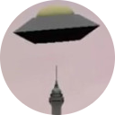
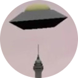

In the future where robots are slaves under humans, a revolution is happening. You play as Cache_22, a half human, half robot cyborg dancer who must resolve the revolution. Dance for the humans, dance for the robots, whatever you decide will be a catch 22.
If you had a chance to read about Keith to the Past you know that alongside my degree at the University of Alberta I completed a Computer Game Development certificate. This involves taking many different sorts of classes, but it all starts with the gateway course CMPUT 250 where teams build a 30 minute video game over the course of the semester. Cache_22, a rhythm game with a branching story and moral choice, was the game made by my team. This project showed me the good things that can happen when you work with a dedicated group of people from many disciplines, and was a great success. Winner of the CMPUT 250 Technical Achievement Award and nominated for Audio Achievement and Game of the Year.
The game is set in the future, where Cache_22 a half-robot half-human cyborg works as a dancer. Cache_22 is being disposed of, replaced by an all-robot dancer, and is cast into the bowels of the ship for disposal. The game begins when he arrives to find things in disarray: the other disposed robots are revolting against their human oppressors. You have to explore three levels, gaining the perspectives of various humans and robots along the way, and to survive you must dance-battle. Dance battling is essentially like guitar hero, hitting keys at the right time along to music, and if you make too many mistakes you lose. Ultimately, you are the key to the revolution and must decide whether you are a human-robot cyborg or a robot-human cyborg.

Development for games in CMPUT 250 is centered around the idea of interdisciplinarity; our team was composed of an English major for music, a Fine Arts major for art, and three Computing Science and one Astrophysics major for programming. I took the role of lead designer, responsible for the overall direction of the game and story, and because of this contributed mainly with dialogue, level design, and scripting. To develop the game, we used the Aurora toolset, pictured here, which is a program that makes modifying Bioware’s Neverwinter Nights easy and accessible. It allows drag and drop level design, dialogue trees, character design, event triggers, and even has it’s own scripting language. While all games made with it inevitably feel similar, our custom music, cutscenes, and broad use of community-made futuristic resources really gave Cache_22 a distinct style. I ended up putting a lot of free time into this project, something I’ve heard is common even in professional game studios, but felt great satisfaction at its completion. For this reason I think the videogame industry might be a good fit for me, and I have this project to thank for showing me that. Below is a teaser trailer for the game, and a sample of the original music created for the game by Tomas Andel. If interested, you can read over the final design document here.
 

The Paris Site is a 3D animated short about Paris and its culture (with a small twist), made with 3ds Max.
Travel Planner is an Android application designed to be a helpful tool for someone travelling on a budget.